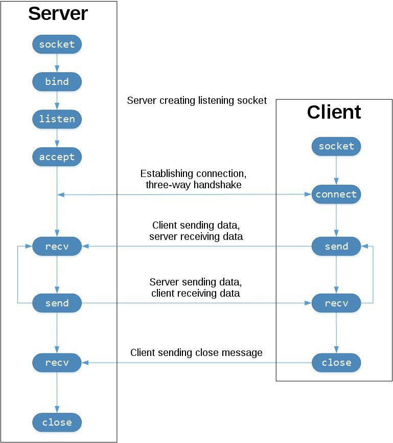

Práctica 1. Programación con sockets en Python
Objetivos
Introducción
La historia de los sockets se remonta al origen de ARPANET, en 1971, y su posterior estandarización en forma de API dentro del sistema operativo Berkeley Software Distribution (BSD), liberado en 1983, bajo el nombre de sockets de Berkeley*.
Con la popularización de Internet en los años 90, y de la mano de la World Wide Web, la programación de red sufrió también una notable evolución. Los servidores web y los navegadores no fueron (ni son) las únicas aplicaciones basadas en sockets. De hecho, los sistemas cliente/servidor son a día de hoy ubicuos e incluyen, por supuesto, a todos los protocolos de alto nivel que dan soporte a Internet de las Cosas. De hecho, a día de hoy, aunque los potocolos de alto nivel (capa de aplicación) han evolucionado hasta niveles de sofisticación no considerados en sus inicios, la API de bajo nivel sobre la que se basan se mantienen inalterada.
El tipo más común de aplicaciones basadas en sockets se basa en el paradigma cliente/servidor, donde una de las partes actúa como servidor, esperando pasivamente conexiones desde un conjunto de uno o más clientes. A continuación, veremos cómo desarrollar este tipo de paradigma desde Python, utilizando sockets Berkeley. Existen también los llamados Unix domain sockets, que permiten la comunicación directa entre procesos en el mismo host, aunque quedan fuera de nuestro interés en el ámbito de IoT.
optional explicit title within double quotes
Any number of other indented markdown elements.
This is the second paragraph.
Tarea
Testing
Cuidado
Testing
Recuerda
Warning
Otro párrafo
La API de sockets en Python
El módulo socket de Python proporciona una interfaz completa para trabajar con la API de sockets de Berkeley. En la presente práctica, trabajaremos exclusivamente con esta API para desarrollar aplicaciones cliente/servidor utilizando los protocolos TCP y UDP.
Las funciones y métodos principales de la API de sockets son:
socket()-bind()-listen()-accept()-connect()-connect_ex()-send()-recv()-close()-
Python prorpocina una API consistente y completa mapeada directamente a las anteriores llamadas al sistema, típicamente escritas en lenguaje C. Como parte de su biblioteca estándar, Python también proporciona clases que facilitan el trabajo con las funciones de bajo nivel. Aunque no lo cubriremos, el módulo socketserver proporciona una forma sencilla de crear servidores de red. Existen también numerosos módulos disponibles para implementar protocolos de alto nivel (por ejemplo HTTP o SMTP), véase .
Sockets TCP
En Python, los sockets TCP se crean en Python utilizando socket.socket(),
especificando el tipo de socket como socket.SOCK_STREAM. El protocolo
de control de transmisión (TCP) se caracteriza por dos rasgos principales:
-
Es confiable: se implementan mecanismos de detección de pérdidas en la red y reenvío de paquetes perdidos.
-
Garantiza una entrega de paquetes en orden: los datos se entregan a las capas superiores (aplicaciones) en el mismo orden en el que fueron enviados.
En contra, los sockets UDP se crean a través de socket.SOCK_DGRAM, y no
son confiables ni garantizan la entrega de paquetes en orden. Por tanto, es
el desarrollador de aplicaciones quien, en caso de así desearlo en el diseño
de la aplicación, debe implementar estos mecanismos de forma específica.
En el siguiente diagrama se muestra la secuencia típica de invocaciones a la API de sockets para TCP:

En la figura, la columna de la izquierda representa al servidor, mientras que la columna de la derecha representa al cliente en la conexión TCP. Observa las invocaciones necesarias para configurar un socket a la escucha de conexiones entrantes:
socket()bind()listen()accept()
En este extremo, un socket escucha (listen) potenciales conexiones entrantes desde clientes. Cuando un cliente solicita conectar, el servidor acepta (accept) la conexión, completándola.
El cliente invoca a connect() para establecer una conexión con el servidor
e inicia el proceso de conexión a tres vías (three-way connection).
Una vez establecida la conexión, los datos se intercambian entre cliente y
servidor a través de invocaciones a send() y recv().
Finalmente, el socket se destruye (esto es, la conexión entre ambos extremos
se cierra) a través de una invocación a close() en cada extremo.
Cliente/servidor echo TCP
Veamos un ejemplo sencillo para crear un par cliente-servidor. En este caso, el servidor simplemente responderá con la misma cadena que reciba desde el cliente.
Servidor echo
#!/usr/bin/env python3
#### servidor_echo.py
import socket
HOST = '127.0.0.1' # Interfaz estándar de loopback (localhost)
PORT = 65432 # Puerto de escucha (los puertos mayores a 1023 son no privilegiados)
with socket.socket(socket.AF_INET, socket.SOCK_STREAM) as s:
s.bind((HOST, PORT))
s.listen()
conn, addr = s.accept()
with conn:
print('Conectado ', addr)
while True:
data = conn.recv(1024)
if not data:
break
conn.sendall(data)
Nota
De momento, no importa si no entiendes todas las líneas en el anterior
código. Simplemente se trata de un punto de partida para desarrollar un
servidor sencillo. Sin embargo, es conveniente que copies el código en
un fichero de texto (por ejemplo, llamado servidor_echo.py) para que
podeamos probarlo.
Veamos línea a línea las partes más importantes del anterior código.
socket.socket() crea un objeto socket. Observa que, al crearse a través
de una construcción with, no es necesario invocar explícitamente a
s.close(), aunque debes tener en cuenta que el objeto es destruido al
finalizar la construcción:
with socket.socket(socket.AF_INET, socket.SOCK_STREAM) as s:
pass # Es posible usar el socket win invocar a s.close().
Los argumentos que se proporcionan a socket() especifican la familia de
direcciones (AF_INET) y tipo de socket (SOCK_STREAM).
AF_INET es la familia de direcciones de Internet para IPv4.
SOCK_STREAM es el tipo de socket que permite la creación de conexiones
TCP.
bind() se utiliza para asociar el socket a una interfaz de red y número de
puerto específicos:
HOST = '127.0.0.1' # Interfaz estándar de loopback (localhost)
PORT = 65432 # Puerto de escucha (los puertos mayores a 1023 son no privilegiados)
# ...
s.bind((HOST, PORT))
Los valores proporcionados a bind() dependen de la familia de direcciones
seleccionada para el socket. En este ejemplo, al utilizar AF_INET,
espera una tupla con únicamente dos valores (host, puerto).
Para determinar el host, es posible utilizar un nombre de host, una dirección IP o una cadena vacía. Si utilizamos una dirección IP, ésta debe ser especificarse mediante una cadena que contenga una dirección IPv4 bien formada. La dirección 127.0.0.1 es la dirección IPv4 estándar para la interfaz de loopback, por lo que únicamente procesos que estén ejecutándose en el propio host podrán comunicar con el servidor. Si proporcionamos una cadena vacía, el servidro aceptará conexiones entrantes a través de todas las interfaces IPv4 disponibles en el sistema.
El número de puerto (port) se especifica con un valor entero entre 1 y 65535, y espcifica el puerto (en este caso, TCP) a través del cual el servidor aceptará conexiones desde los clientes. La mayoría de sistemas requieren permisos de superusuario para escuchar a través de los puertos (well-known), es decir, con valor inferior a 1024.
Continuando con el ejemplo, listen() posibilita que un servidor pueda, en el
futuro, aceptar (accept()) conexiones entrantes. En otras palabras, pone a
la escucha al socket:
s.listen()
conn, addr = s.accept()
La invocación a accept() bloquea el proceso y espera a una conexión
entrante. Cuando un cliente conecta, devuelve un objeto socket que representa
la conexión, así como una tupla (addr) que contiene la dirección del cliente.
Concretamente, esta tupla contiene los valores (host, port) que almacenan
la dirección IPv4 y puerto del cliente que solicita la conexión.
Observa que, en el ejemplo, conn es el objeto socket que usaremos para
comunicar con el cliente:
conn, addr = s.accept()
with conn:
print('Conectado ', addr)
while True:
data = conn.recv(1024)
if not data:
break
conn.sendall(data)
Tras obtener el objeto devuelto por accept(), diseñamos el servidor como un
bucle infinito que invoca repetidamente a llamadas bloqueantes a
conn.recv(). Así, leemos los datos enviados por el cliente y los reenviamos
sin modificación utilizando conn.sendall().
Si conn.recv() devuelve un objeto de tipo bytes vacío (b'') significa
que el cliente cerró la conexión, en cuyo caso el bucle termina, destruyéndose
el socket al salir de la sentencia with.
Cliente echo
Veamos a continuación la estructura general del cliente (puedes usar, por
ejemplo, cliente_echo.py como nombre para el fichero):
#!/usr/bin/env python3
### cliente_echo.py
import socket
HOST = '127.0.0.1' # IP del servidor
PORT = 65432 # Puerto de escucha del servidor
with socket.socket(socket.AF_INET, socket.SOCK_STREAM) as s:
s.connect((HOST, PORT))
s.sendall(b'Hola, mundo')
data = s.recv(1024)
print('Recibido ', repr(data))
En comparación con el servidor, la estructura del cliente es más simple;
simplemente crea un nuevo objeto socket, conecta con el servidor e invoca
a s.sendall() para enviar el mensaje. Finalmente, espera la recepción de
la respuesta utilizando s.recv() y la imprime por pantalla.
Ejecución del cliente y servidor echo
A continuación, ejecutaremos cliente y servidor para observar el estado de las conexiones durante su ciclo de vida.
Ejecuta en una terminal el servidor:
$ python3 ./servidor-echo.py
Como ves, la terminal se bloquea (de hecho, el servidor permanece en estado bloqueado) en la invocación:
conn, addr = s.accept()
Realmente, el servidor está esperando a que haya conexiones entrantes por parte de un cliente. Abre otra terminal y ejecuta el cliente:
$ python3 cliente-echo.py
Recibido 'Hola, mundo'
En la ventana del servidor, deberías ver algo similar a:
$ python3 ./servidor-echo.py
Conectado ('127.0.0.1, 61234')
En esta salida, el servidor ha mostrado por pantalla la tupla devuelta por
s.accept(), que incluye la dirección IP y el número de puerto TCP. Dicho
número de puerto (en el ejemplo anterior, 61234) es seleccionado aleatoriamente
por el sistema operativo y puede variar en tu ejecución.
Herramientas para observar el estado del socket
Podemos utilizar la herramienta netstat para observar el estado actual de
los sockets en cualquier sistema operativo (macOS, Linux e incluso Windows). Por
ejemplo, esta sería la salida de netstat en Linux tras ejecutar el servidor:
netstat -an | grep 65432
Conexiones activas de Internet (servidores y establecidos)
Proto Recib Enviad Dirección local Dirección remota Estado
tcp 0 0 127.0.0.1:65432 0.0.0.0:* ESCUCHAR
Observa que hemos filtrado la salida de la orden netcat según el número de
puerto utilizado. Observa el valor de las columnas Proto, Dirección local y
Estado.
Nota
Otra forma de observar el estado de las conexiones es a través de la orden
lsof -i -n. Ejecútala y observa su salida.
Sockets UDP
La creación y gestión de sockets UDP en Python resulta todavía más sencilla. Observa el siguiente código, que crea un servidor UDP utilizando la API de sockets Python:
import socket
udp_socket = socket.socket(socket.AF_INET, socket.SOCK_DGRAM)
udp_socket.bind(("localhost", 5005))
data = udp_socket.recv(512)
print(data)
Primero, importamos la biblioteca socket de recepción, igual
que en el caso de TCP. Obviamente, en este caso el tipo de socket pasa a ser
socket.DOCK_DGRAM, para indicar que deseamos utilizar UDP en la comunicación.
El programa espera a la recepción de un paquete utilizando el método bloqueante
recv, cuyo único parámetro indica el número máximo de bytes que deseamos
recibir. Cuando un paquete llega al socket, el metodo recv devolverá un
array de bytes, que será almacenado en la variable que deseemos.
El envío de datos a través de un socket UDP es también sencillo:
import socket
udp_socket = socket.socket(socket.AF_INET, socket.SOCK_DGRAM)
udp_socket.bind(("localhost", 0))
data = b"Hola, mundo!"
udp_socket.sendto(data,("localhost", 5005))
Observa que, en este caso, asociamos (bind) el socket a un puerto especificado como 0. Este valor especial indica al sistema operativo que elija para la transimisión un puerto origen aleatorio de entre los disponibles en el sistema.
A continuación, creamos los datos a enviar y los enviamos utilizando el método
sendto(). Este método tomados argumentos: datos a enviar, y precisamente la
dirección de envío. Los datos enviados a través del socket deben formar parte
de un array de bytes (por ello, la cadena a enviar viene precedida por el
carácter b).
Tarea
Comprueba que, efectivamente, los códigos de envío y recepción a través de UDP funcionan como se espera.
Nota
Desde la versión 3 de Python, las cadenas se codifican utilizando Unicode. Al contrario que ASCII, conde cada caracter tiene una representación en byte directa, Unicode utiliza enteros par representar cada caracter, que deben ser codificados para obtener una representación en forma de byte. Uno de esos esquemas de codificación es UTF-8. Por ejemplo, el siguiente código muestra cómo codificar una cadena Unicode en una representación de bytes:
cadena= "Hola"
data = cadena.encode("UTF-8")
print(data, type(data))
lo cual genera
b"Hola" <class 'bytes'>
que puede ya ser enviado directamente por red.
Hasta este punto, los programas UDP han sido totalmente unidireccionales en el envío/recepción de datos, pero obviamente, un socket UDP es un canal de comunicación bidireccional.
Tarea
Implementa una funcionalidad similar al servidor echo que vimos para TCP, pero utilizando en este caso UDP.
Envío de datos binarios a través de sockets
Hasta este punto, hemos visto únicamente cómo enviar cadenas de texto a través
de sockets TCP o UDP, pero es muy probable que sea necesario (o conveniente),
en ocasiones, enviar datos directamente en formato binario (por ejemplo,
valores numéricos en punto flotante o enteros). Utilizando el módulo
struct de Python podemos especificar qué tipo o tipos de datos se almacenan
en una secuencia de bytes y cómo decodificarlos. También es posible especificar
en qué lugar de la secuencia se alojan dichos datos, permitiendo el empaquetado
de múltiples datos de distintos tipos de forma sencilla, y su posterior
decodificación en el otro extremo de la comunicación.
Nota
Para todos los detalles del módulo struct, consulta la página oficial de
documentación.
El módulo struct proporciona dos métodos de interés: pack y unpack.
La siguiente sentencia:
struct.pack(">iii", 1, 2, 3)
utiliza el método pack para realizar un empaquetado de datos. Concretamente,
observa como el método recibe dos parámetros:
-
En primer lugar, el parámetro de formato ">iii". Define como debe codificarse cada valor en la secuencia de bytes. El primer carácter indica el endianness utilizado, en este caso big endian (utilizaríamos ">" para big endian, "<" para little endian y "=" para network (big) endian).
-
En segundo lugar, los valores a empaquetar.
Observa que el formato, además, incluye el número y tipo de los datos a empaquetar (en este caso, tres valores detipo entero). Para otros tipos de datos, consulta la documentación del módulo.
Desempaquetar los datos enviados en el extremo opuesto es intuitivo:
a, b, c = struct.unpack( ">iii" )
Tarea entregable
Se pide diseñar un sistema cliente/servidor programado en Python, que simule el envío de un conjunto de datos sensorizados desde un cliente hacia un servidor. El protocolo a utilizar (formato de datos enviado por la red) debe ser propuesto por el propio alumno y descrito previamente al desarrollo. Se valorará el uso de múltiples tipos de datos tanto en el envío de datos sensorizados como de posibles respuestas por parte del servidor. Se desarrollará una versión utilizando TCP y otra equivalente usando UDP. Los datos se enviarán de forma periódica y se generarán de modo aleatorio.